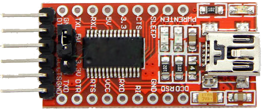
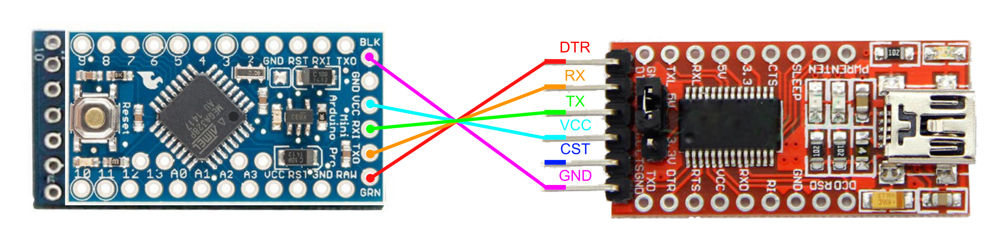
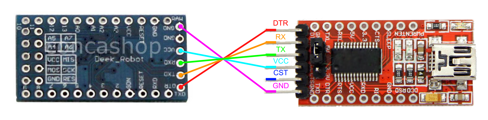

Le FTDI permet de flasher un microcontroleur(Arduino) sans passer par une liaison serie RS232 (connecteur de plus en plus rare), Il utilise la prise USB pour convertir les informations en liaison serie


